Mad Scientist's petz etc for you
~~~~~~~~~~~~~~~~~~~~~~~~~~~~~
Click here for the Scientist's Sprite-swapping insanity
Click here for my delvings into the .LNZ file.
Click here for the Scientist's Petz 5 Easy-edit mice kit
Click here for Nursery-freedom Petz 5 exe file
Note: if you get the multiple-cloned-babes effect, go to the Nursery, put mum awayand then
go back to another scene. The "clones" will disappear. If you don't knowwhat I'm talking about, then you're
not being bothered by it :-)
Click here for the Petz II demo
This Petz II demo will install for people who have Windows ME, 2000, and XP as wellas the
95 and 98 operating systems. It's simply the original Catz II and Dogz IIdemos unpacked and installed, then
zipped up for easy unpacking.
Click here for the Petz II modified exe
This is modified to let brain-slider users see what some of the sliders mean.
Click here for a backup of your Petz 3 exe file
This backup should work with all English-language versions of the game
Click here for a backup of your Petz 3 German-language exe
file
The German one should work with other non-English-language versions of the game
Click here for my Petz 5 "fooler"
For those who don't have the game. It leads you on a kind of scavenger-hunt, and itworks --
trust the mad hexer, oh yes. *cackles* aha aha bwahahaha...
P.S. if you cannot find the game-originals anywhere, here are the
pig and
bunny
and for those who have lost or broken their CDs and need a backup,
Click here.
Babyz Demo Fooler be here, oh yes.
Click here for modified Babyz exe file
Oddballz Demo Fooler are here, indeed kind sir.
Wey-hey-hey! At last, the catz 1 demo fooler!
What do I see here? Aha! A dogz 1 demo fooler
many thanks to SuperSwampert67.
Note, I also now have a second fooler of my own, downloadable from the same page, that you may want to
try. My fooler lets you adopt new pets, but remember to keep backups of your old petz before doing so!
Dogz 1 only expects you to want to keep one pet.
Woah, another SuperSwampert67 Fooler! Petz 4!
Note, I also now have a second fooler, downloadable from the same page, that you may
want to try. This fooler requires a large download of about 120 megabytes.
At last, my demo-fooler for Petz 3 :-)
And Bwahahaha, a fooler for Petz 3 non-English
Now for your delectation, a demo-fooler for Petz II
Today The Mad Scientist presents the ultimate in inbreeding for your disgust or entertainment. The zipfile
contains the hidden "test" .LNZ from Petz 5's resource .dlls, and the pet which it creates. But being crazy of
course I go further than that; I then copied the pet, turned the copy into a boy, and thus bred the pet with
itself.
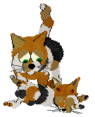
As you can see, the little lady isn't quite sure where those horns came from on her dainty little babe...
The _Cat_Chew_ family for Catz 3, 4 or 5.
More crazy graftings! The Mad Scientist presents Cerberus, the snake-tailed 3-headed dog, for your delectation.
Actually, a pair of Cerberus family petz...
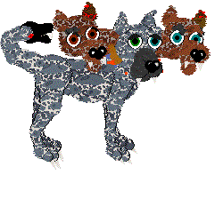
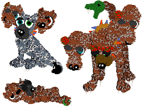
For Dogz 3, 4 or 5. The cute li'l baby is not included, awwww...
but, for those who want to breed with these petz (youmust be bonkers!!) here is
the .LNZ file, for use with my external-lnz Great Dane packages
which you can get from the "For LNZ-files 'n' easy-edits" pages; it will of course overwrite the normal Dane's
.LNZ. Read the readme in the easy-edit package if you don't know what to do with .LNZ files.
The Mad Scientist has taken to grafting things onto petz -- bwahahaha! She presents the Cat 'o' Nine Tails (and
three heads, she got really carried away). Cerberus, the snake-tailed 3-headed dog will be with us at a later
date.
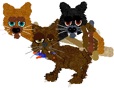
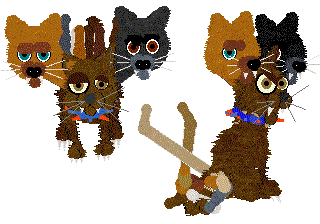
For Catz 3, 4 or 5. For those who want to breed with it (are you
crazy)?? here is the .LNZ file, for use with my
external-lnz Alley-cat packages which you can get from the "For LNZ-files 'n' easy-edits" pages; it will of
course overwrite the normal Alley's .LNZ. Read the readme in the easy-edit package if you don't know what to do
with .LNZ files.
The mad scientist strikes again... Freeing your nursing mothers from the drudgery of the Nursery, allowing the
fathers to play or two mothers to chat while their broods play together. You can either
do it yourself or you can download an
especially-modified exe file
As a bonus, this modified exe contains three fixes; one allows your nursing mothers to come out of the Nursery
if they wish, the second provides the "import from Petz 4" menu item, and the third provides the Petz profile as
a menu item. I found it irritating having to partway open the carry-case in order to select a pet, also I
sometimes want to see pet data without taking out any pets. This menu item allows this. I also changed the
splash screen so that you know which exe you're using. Make sure that you keep your original somewhere safe --
this one overwrites your original, and I take no responsibility if it crashes your game. It works fine in my
game, so if it doesn't in yours and you get abducted by aliens in white coats instead -- well, that's life.
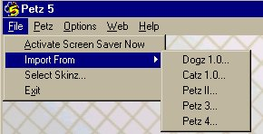 .
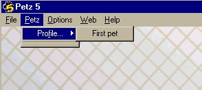
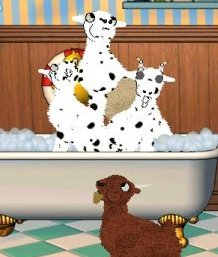
Note: if you get the multiple-cloned-babes effect, go to the Nursery, put mum away and then go back to another
scene. The "clones" will disappear. Or you can close the game and re-open it; they will have gone then too. If
you don't know what I'm talking about, then you're not being bothered by it and you need do nothing :-)
Modified Babyz Exe for Playpen access
The mad scientist produces her ongoing testbed .exe file for Babyz. The idea was to eventually be able to get
the game to accept more playscenes, by avoiding the need to use the house icon which goes berserk if a
non-overwriting scene is added. As yet in my game I have not been able to get it to work for the Attic and
Nursery, so have not got as far as further scenes. It does have one feature that Babyz players might enjoy; the
Playpen and Desktop "scenes" are both usable. NOTE: It overwrites your original so please, folks, put yours
somewhere safe. The mad scientist takes no responsibility for anything from game-crashes through to
flame-throwers decimating your backyard and more;remember, she's crazy :-)
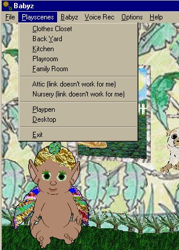
Click here for LNZ debowellings
Read a whole bunch of the mad scientist's delvings into the .LNZ file. All the gory details are laid bare in a minute dissection of the Key Texts (or commands), key-words and programmers' comments. This is not a tutorial or a how-to, it is an explanation of all those mysterious gobbets of data inside the .lnz files. Mainly it's a Petz breakdown, but Oddballz and babyz fans take note, most of what I describe in this is relevant to you also. Plus, I shall be making similar breakdowns of the areas which are different, or specific only to, those games as soon as I can.
Click here for the Scientist's Sprite insanity
I have been experimenting for many years to find the limits of what these games can take, and delving deep into
the files, dabbling my fingers in the genetic pool, gender-bending petz and generally creating strangenesses of
great peculiarity. And at last the mad-scientist brain has snapped and I present to you...
(sound effects of crazy cackling, sudden thunderstorm lashes at window, wind comes howling though, lightning
flashes...)
Download inmates of The Insane Dogz-catz Asylum!
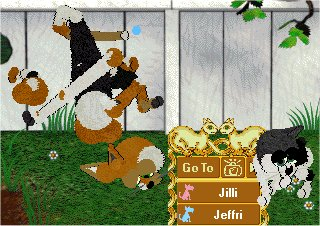
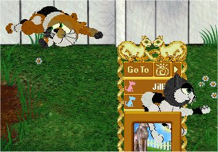
Insane Calicos for Petz 3 /
Petz 4 /
Petz 5
To see the above breed in action, you will need the dogz part of the game and either the catz part of
the game or the "catz behaviours" package which I've got on my "Cat species in dogz" page. It will not work if
you only have catz or only have dogz. Hah! A true cross-breed! But please read the included Readme textfile. You
cannot adopt from this breed... So, included in the package are a pair of petz who are happy in their total
insanity. And for the soft-hearted, if you cannot bear the sight of Jilli and Jeffri tearing themselves apart,
also included in the package is a zip of the two of them restored to sanity.
And now for something completely different. The petz can breed and I include a baby, freshly separated from her
mother, in the zipfile; on the other hand, the wire Babyz doesn't breed but it does grow :-)
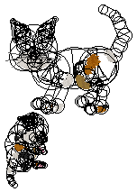
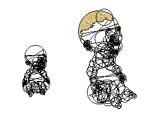
The wireframe calico family /
the wireframe babyz
And finally, for Babyz, the experimenter went crazy on polygons...
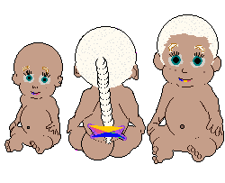
Polygon babyz
Happy daze...